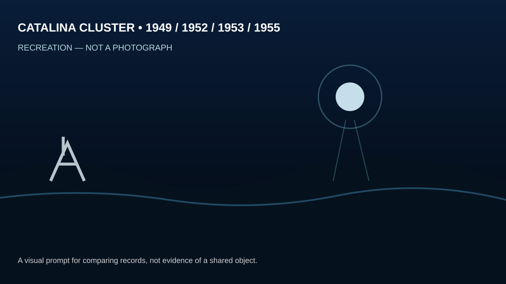
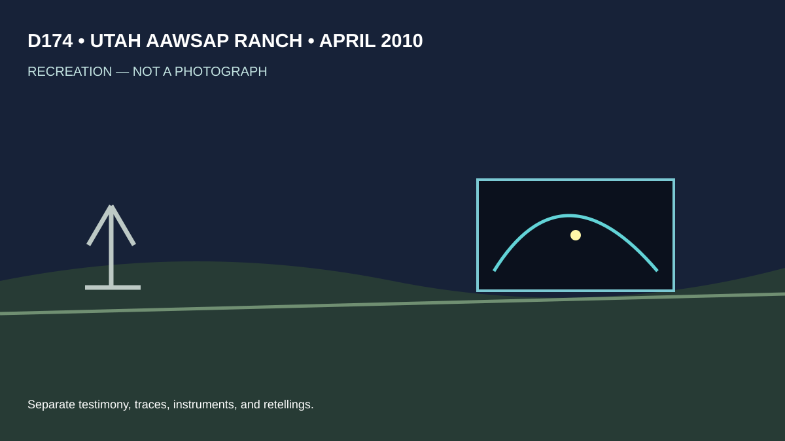
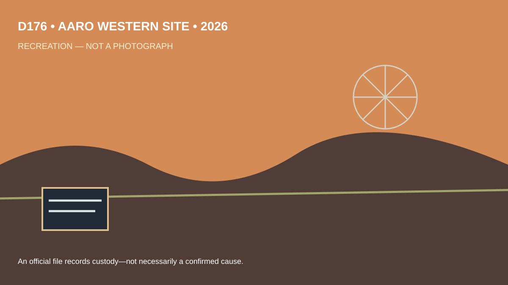

VERIFIED INVENTORY Four records and dates are in scope. INTERPRETATION A cluster invites comparison.
Four places, eight records, and one useful rule: an official document can preserve a mystery without solving it.
“Verified” here means the supplied Release 07 inventory identifies the document. Check primary pages before quoting details.
The inventory lists four Catalina Island records, dated 1949, 1952, 1953 and 1955. That is a peculiar pattern—but a pattern is not a verdict. It may reflect a local phenomenon, reporting habits, or what survived in official custody. The fair next step is comparison: witness, weather, direction, duration, and independent corroboration.

A B-52 makes a strange report consequential: aviation, security, and instrumentation enter the frame. But dramatic context raises the stakes, not the certainty. Ask what was tracked, who saw it, whether instruments agreed, and what ordinary explanations were tested.


Release 07 contains eight documents and no video bundle. The modern records show institutions classifying and preserving reports. That is valuable evidence about process. It is not, by itself, confirmation of an unusual explanation.